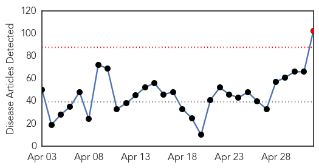
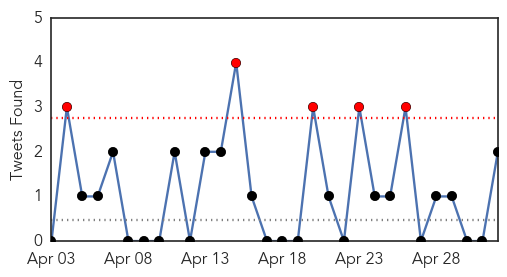
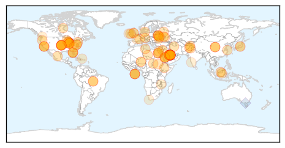
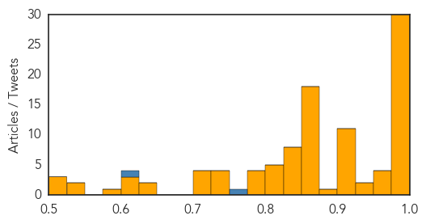
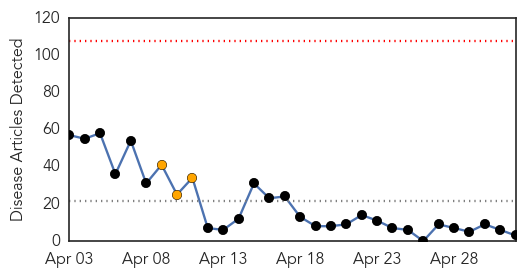
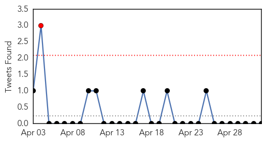
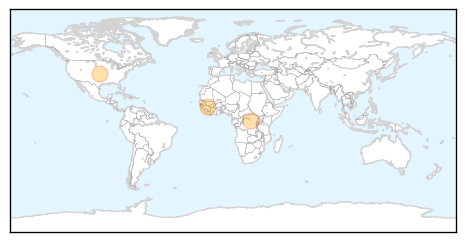

Unknown
30-Day Web Trend
1 alerts, 0 warnings

30-Day Twitter Trend
4 alerts, 0 warnings

Article Locations
Article Confidences
Top Articles:
- 1.000
- U.S. Officials Confirm 1st U.S. Case of Middle East Respiratory Syndrome
- 1.000
- 1st MERS Case Reported in U.S.
- 0.999
- First U.S. case of deadly MERS virus confirmed
- 0.999
- Saudi reports 26 more MERS cases
- 0.999
- First US Case Of Deadly MERS Virus Confirmed
- 0.999
- First U.S. case of MERS tied to Chicago, Indiana
- 0.999
- A disease that’s three times more deadly than SARS just reached the United States
- 0.999
- First U.S. MERS case found in patient recently returned from Saudi Arabia
- 0.998
- MERS Virus Comes To U.S., But Risk To Public Is Deemed Low
- 0.998
- Deadly Middle East Virus MERS in U.S. For First Time, CDC Says
- 0.998
- Deadly Middle East Virus MERS in U.S. For First Time, CDC Says
- 0.997
- UPDATE 1-Saudi Arabia finds 26 more cases of MERS, Egypt reports first suffererHealthcare
- 0.997
- Saudi Arabia finds 26 more cases of MERS, Egypt reports first sufferer
- 0.997
- Saudi Arabia finds 26 more cases of MERS, Egypt reports first sufferer
- 0.997
- Saudi Arabia finds 26 more cases of MERS; Egypt reports first
- 0.997
- First U.S. case of MERS virus confirmed in Indiana health care worker
- 0.997
- Saudi Arabia finds 26 more cases of MERS, Egypt reports first sufferer
- 0.997
- MERS Virus Comes To U.S., But Risk To Public Is Deemed Low
- 0.996
- Officials confirm first MERS case in the U.S.
- 0.994
- Saudi Arabia MERS cases double in April
- 0.994
- Indiana Man Diagnosed With First American MERS Case
- 0.993
- First Case of MERS Confirmed in the United States
- 0.992
- First U.S. case of deadly MERS virus confirmed - CDC
- 0.992
- UPDATE 2-First U.S. case of deadly MERS virus confirmed - CDC
- 0.991
- US officials confirm first case of Middle East Respiratory Syndrome
- 0.989
- It is Still Not Time to Destroy Small Pox Virus, Researchers Say
- 0.988
- Saudi Arabia finds 26 more cases of MERS, Egypt reports first sufferer
- 0.987
- 5 Things to Know About the MERS Virus Now That It's Here
- 0.978
- Scientists call for last living samples of the virus that causes smallpox to be kept alive
- 0.975
- No new MERS infections in Egypt: Minister of Health
- 0.971
- U.S. officials confirm 1st case of Middle East Respiratory Syndrome
- 0.965
- Smallpox Cousin Infects People in Georgia [Video]
- 0.955
- First MERS Virus Case Identified in U.S.
- 0.955
- First MERS Virus Case Identified in U.S.
- 0.949
- Mysterious disease claims lives of 14 women in Bajaur
- 0.948
- Bioterror Threat? New Smallpox-Related Virus Raises Alarms
- 0.917
- Chicago Tribune
- 0.917
- Chicago Tribune
- 0.917
- Chicago Tribune
- 0.917
- Chicago Tribune
- 0.917
- Chicago Tribune
- 0.917
- Chicago Tribune
- 0.917
- Chicago Tribune
- 0.917
- Chicago Tribune
- 0.917
- Chicago Tribune
- 0.917
- Chicago Tribune
- 0.906
- Fighting east Sudan triggers new displacements
- 0.894
- Shanghai Reopens Live Poultry Markets, but H7N9 Fears Linger
- 0.866
- S.Sudan's president commits to steps to end fighting
- 0.866
- Kremlin says Kiev destroys hope for Geneva accord
Showing top 50 articles...
Top Tweets:
- 0.753
- RT: Thoughts on MERS CoV detctn in people without disease. Have things changed during Jeddah outbreak?Nuh. More at VDU http://t.…
- 0.652
- In young hospitalised adults the risk of severe outcomes is 2-4 times greater with pandemic H1 flu than seasonal flu http://t.co/BQIMqd8hxS
- 0.607
- Flu Fact Friday: Type C of the flu is the least serious, causing cold-like symptoms.
- 0.540
- RT: Ah, crap. But inevitable. “CDC Confirms First Case Of MERS Virus In U.S.” http://t.co/PktYJhWw0k
Ebola
30-Day Web Trend
0 alerts, 3 warnings

30-Day Twitter Trend
0 alerts, 0 warnings

Article Locations
Article Confidences

Top Articles:
Top Tweets:
- 0.771
- Ebola in Guinea 2014: http://t.co/89rtmLov87 Video on response to the outbreak, from
- 0.517
- Fast-paced publication! Ebola outbreak research submitted on Mon, peer-reviewed, revised & published in 5 days http://t.co/PufjFckVLG